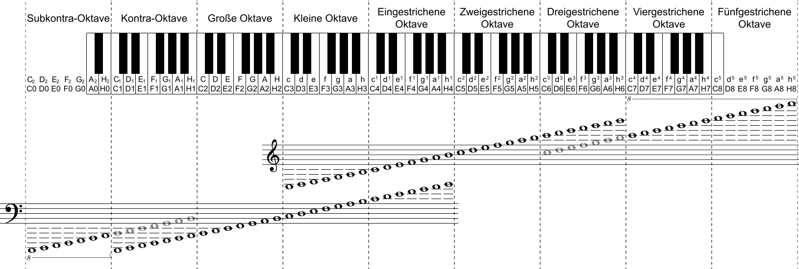

0 presses per second
Treble Staff Line Notes von unten nach Oben:(C)hristina (E)ine (G)eile (B)londine (D)reht (F)ilme (A)b
Treble Staff Space Notes D - F A C E - G
Bass Staff Line Notes von unten nach Oben: (G)anz (B)erlin (D)ankt (F)ür (A)ngebote
Bass Staff Space Notes (A)(C)(E)-(G)etränke
 Phillip Kuhrt (Original by Sergey Pushkin) CC BY-SA 3.0